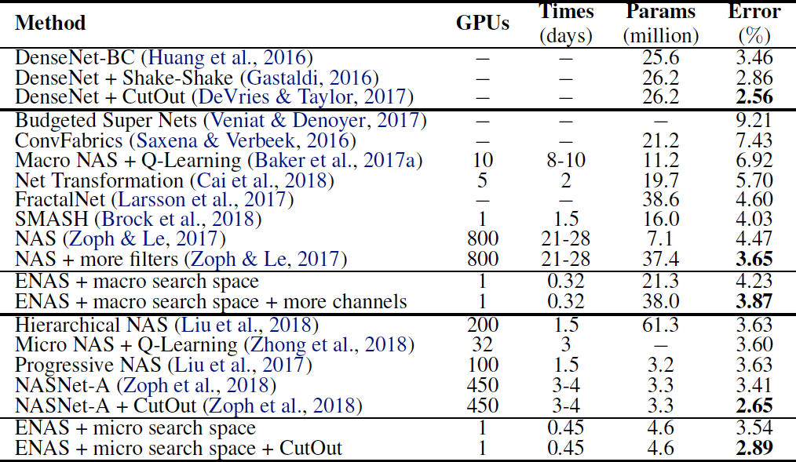

ENAS
(ICML 2018) Efficient Neural Architecture Search via Parameter Sharing
Paper: https://arxiv.org/abs/1802.03268
Code: https://github.com/melodyguan/enas
我们提出了高效的神经架构搜索（ENAS），一种快速且廉价的自动模型设计方法。在 ENAS 中，有一个控制器通过在一个大型计算图中搜索一个最优的子图以学习发现最优神经网络架构的方法。控制器采用策略梯度进行训练，以选择最大化验证集期望奖励的子图。同时，和所选子图对应的模型将进行训练以最小化标准交叉熵损失。由于子模型之间的参数共享，ENAS 的速度很快：它只需要使用少得多的 GPU 运算时间就能达到比当前的自动化模型设计方法好很多的经验性能，尤其是，其计算成本只有标准的神经架构搜索（NAS）的千分之一。
We propose Efficient Neural Architecture Search (ENAS), a fast and inexpensive approach for automatic model design. In ENAS, a controller discovers neural network architectures by searching for an optimal subgraph within a large computational graph. The controller is trained with policy gradient to select a subgraph that maximizes the expected reward on a validation set. Meanwhile the model corresponding to the selected subgraph is trained to minimize a canonical cross entropy loss. Sharing parameters among child models allows ENAS to deliver strong empirical performances, while using much fewer GPUhours than existing automatic model design approaches, and notably, 1000x less expensive than standard Neural Architecture Search.
中文
简介
本文研究做出的主要贡献是通过强制所有子模型共享权重而提升了 NAS 的效率。
重要的是，在本研究所有使用单个 Nvidia GTX 1080Ti GPU 的实验中，搜索架构的时间都少于 16 小时。相较于 NAS，GPU 运算时间缩短了 1000 倍以上。
方法
ENAS 思想的核心是观察到 NAS 最终迭代的所有图可以看作更大图的子图。换句话说，我们可以使用单个有向无环图（DAG）来表征 NAS 的搜索空间。
设计循环单元
为了设计循环单元，作者使用了有 N 个结点的有向无环图（DAG），其中每个节点代表局部运算，而每条边代表 N 个节点中的信息流。
ENAS 的控制器是一个 RNN，它会控制：
哪一条边处于激活状态
在 DAG 中的每一个结点会执行哪些运算
图 1：搜索空间中带有四个计算节点的循环单元案例。左图为对应循环单元的计算 DAG，其中红色的边代表图中的信息流。中间为循环单元。右图为 RNN 控制器的输出结果，它将会生成中间的循环单元和左边的 DAG。注意节点 3 和 4 永远不会被 RNN 采样，所以它们结果是平均值，且可以作为单元的输出。
训练 ENAS 及衍生架构
我们的控制器网络是一个有 100 个隐藏单元的LSTM。
在 ENAS 中，有两组可学习的参数：控制器 LSTM 的参数，由 \(\theta\) 表示，以及子模型的共享参数，由 \(\omega\) 表示。
第一阶段训练 \(\omega\)，子模型的共享参数，通过训练数据集训练一个完整的 pass。
第二阶段训练控制器 LSTM 的参数 \(\theta\)，固定步数，在我们的实验中通常设置为 2000。
训练子模型的共享参数 \(\omega\)
在此步骤中，我们修复控制器的策略 \(\pi(m; \theta)\) 并在 \(\omega\) 上执行随机梯度下降（SGD）最小化预期损失函数（标准交叉熵损失）。使用蒙特卡洛估计来计算梯度。
训练控制器参数 \(\theta\)
在此步骤中，我们修复 \(\omega\) 并更新策略参数 \(\theta\)，旨在最大化预期的奖励。使用 REINFORCE 计算梯度。
推导架构
我们首先从训练好的策略 \(\pi(m; \theta)\) 中抽取几个模型。对于每个采样模型，我们从验证集中采样的单个小批量上计算其奖励。然后我们只采用奖励最高的模型从头开始重新训练。
设计卷积网络
在卷积网络的搜索空间中，RNN 控制器在每一个决策模块上会制定两组决策：
前一个单元需要连接什么；
它需要什么样的运算过程。
这些决策共同构建了卷积网络中的不同层级。
图 3：搜索空间中一个循环单元的实例运行，该空间带有 4 个计算节点，表征卷积网络的 4 个层。顶部：控制器 RNN 的输出。左下：对应于网络架构的计算 DAG。红箭头表征激活的计算路径。右下：完整的网络。虚线箭头表征跳跃连接。
控制器可用的6种操作是：滤波器大小为 3 x 3 和 5 x 5 的卷积，滤波器大小为 3 x 3 和 5 x 5 的深度可分离卷积，核大小为 3 x 3 的最大池化和平均池化。
设计卷积单元
本文并没有采用直接设计完整的卷积网络的方法，而是先设计小型的模块然后将模块连接以构建完整的网络。图 4 展示了这种设计的例子，其中设计了卷积单元和 reduction cell。
图 4：连接卷积单元和 reduction 单元，以构建完整的网络。
5 个可用的操作是：identity，核大小为 3 x 3 和 5 x 5 的可分离卷积，核大小为 3 x 3 的平均池化和最大池化。
还可以从我们讨论的搜索空间中实现缩小单元，简单地通过以下方式：
- 从搜索空间中对计算图进行采样
- 对所有操作设置步长为 2
因此，缩小单元减小了其空间维度，为原来的一半。
实验
在 Penn Treebank 数据集上训练的语言模型
图 6：ENAS 为 Penn Treebank 数据集发现的 RNN 单元。
表 1：ENAS 为 Penn Treebank 数据集发现的架构的测试困惑度以及其它的基线结果的比较。（缩写说明：RHN 是 Recurrent Highway Network、VD 是 Variational Dropout、WT 是 Weight Tying、ℓ2 是 Weight Penalty、AWD 是 Averaged Weight Drop、MoC 是 Mixture of Contexts、MoS 是 Mixture of Softmaxes。）
在 CIFAR-10 数据集上的图像分类实验

表 2：ENAS 发现的架构在 CIFAR-10 数据集上的分类误差和其它基线结果的对比。在这个表中，第一块展示了 DenseNet，由人类专家设计的当前最佳架构。第二块展示了设计整个网络的方法。最后一块展示了设计模块单元以构建大型模型的技术。
图 7：ENAS 从大型搜索空间中发现的用于图像分类的网络架构。
ENAS 用了 11.5 个小时来发现合适的卷积单元和 reduction 单元，如图 8 所示。
图 8：ENAS 在微搜索空间中挖掘新的单元。
ENAS 的重要性
相关工作和讨论
##结论
在本文中，我们介绍了 ENAS，一种在 GPU 小时数方面加速 NAS 超过1000倍的新方法。ENAS的关键贡献是在搜索体系结构时跨子模型共享参数。
English
Introduction
The main contribution of this work is to improve the efficiency of NAS by forcing all child models to share weights to eschew training each child model from scratch to convergence.
Importantly, in all of our experiments, for which we use a single Nvidia GTX 1080Ti GPU, the search for architectures takes less than 16 hours. Compared to NAS, this is a reduction of GPU-hours by more than 1000x.
Methods
Central to the idea of ENAS is the observation that all of the graphs which NAS ends up iterating over can be viewed as sub-graphs of a larger graph. In other words, we can represent NAS’s search space using a single directed acyclic graph (DAG).
Designing Recurrent Cells
To design recurrent cells, we employ a DAG with N nodes, where the nodes represent local computations, and the edges represent the flow of information between the N nodes.
ENAS’s controller is an RNN that decides:
which edges are activated
which computations are performed at each node in the DAG.
Figure 1. An example of a recurrent cell in our search space with 4 computational nodes. Left: The computational DAG that corresponds to the recurrent cell. The red edges represent the flow of information in the graph. Middle: The recurrent cell. Right: The outputs of the controller RNN that result in the cell in the middle and the DAG on the left. Note that nodes 3 and 4 are never sampled by the RNN, so their results are averaged and are treated as the cell’s output.
Training ENAS and Deriving Architectures
Our controller network is an LSTM with 100 hidden units.
In ENAS, there are two sets of learnable parameters: the parameters of the controller LSTM, denoted by \(\theta\), and the shared parameters of the child models, denoted by \(\omega\).
The first phase trains \(\omega\), the shared parameters of the child models, on a whole pass through the training data set.
The second phase trains \(\theta\), the parameters of the controller LSTM, for a fixed number of steps, typically set to 2000 in our experiments.
Training the shared parameters \(\omega\) of the child models.
In this step, we fix the controller’s policy \(\pi(m; \theta)\) and perform stochastic gradient descent (SGD) on \(\omega\) to minimize the expected loss function (the standard cross-entropy loss). The gradient is computed using the Monte Carlo estimate.
Training the controller parameters \(\theta\).
In this step, we fix \(\omega\) and update the policy parameters \(\theta\), aiming to maximize the expected reward. The gradient is computed using REINFORCE.
Deriving Architectures.
We first sample several models from the trained policy \(\pi(m; \theta)\). For each sampled model, we compute its reward on a single minibatch sampled from the validation set. We then take only the model with the highest reward to re-train from scratch.
Designing Convolutional Networks
In the search space for convolutional models, the controller RNN also samples two sets of decisions at each decision block:
what previous nodes to connect to
what computation operation to use.
These decisions construct a layer in the convolutional model.
Figure 3. An example run of a recurrent cell in our search space with 4 computational nodes, which represent 4 layers in a convolutional network. Top: The output of the controller RNN. Bot- tom Left: The computational DAG corresponding to the network’s architecture. Red arrows denote the active computational paths. Bottom Right: The complete network. Dotted arrows denote skip connections.
The 6 operations available for the controller are: convolutions with filter sizes 3 x 3 and 5 x 5, depthwise-separable convolutionswith filter sizes 3 x 3 and 5 x 5, and max pooling and average pooling of kernel size 3 x 3.
Designing Convolutional Cells
Rather than designing the entire convolutional network, one can design smaller modules and then connect them together to form a network. Figure 4 illustrates this design, where the convolutional cell and reduction cell architectures are to be designed.
Figure 4. Connecting 3 blocks, each with N convolution cells and 1 reduction cell, to make the final network.
The 5 available operations are: identity, separable convolution with kernel size 3 x 3 and 5 x 5, and average pooling and max pooling with kernel size 3 x 3.
A reduction cell can also be realized from the search space we discussed, simply by:
sampling a computational graph from the search space
applying all operations with a stride of 2.
A reduction cell thus reduces the spatial dimensions of its input by a factor of 2.
Experiments
Language Model with Penn Treebank
Figure 6. The RNN cell ENAS discovered for Penn Treebank.
Table 1. Test perplexity on Penn Treebank of ENAS and other baselines. Abbreviations: RHN is Recurrent Highway Network, VD is Variational Dropout; WT is Weight Tying; ℓ2 is Weight Penalty; AWD is Averaged Weight Drop; MoC is Mixture of Contexts; MoS is Mixture of Softmaxes.
Image Classification on CIFAR-10
Table 2. Classification errors of ENAS and baselines on CIFAR-10. In this table, the first block presents DenseNet, one of the state-ofthe- art architectures designed by human experts. The second block presents approaches that design the entire network. The last block presents techniques that design modular cells which are combined to build the final network.
Figure 7. ENAS’s discovered network from the macro search space for image classification.
ENAS takes 11.5 hours to discover the convolution cell and the reduction cell, which are visualized in Figure 8.
Figure 8. ENAS cells discovered in the micro search space.
The Importance of ENAS
Related Work and Discussions
Conclusion
In this paper, we presented ENAS, a novel method that speeds up NAS by more than 1000x, in terms of GPU hours. ENAS’s key contribution is the sharing of parameters across child models during the search for architectures.